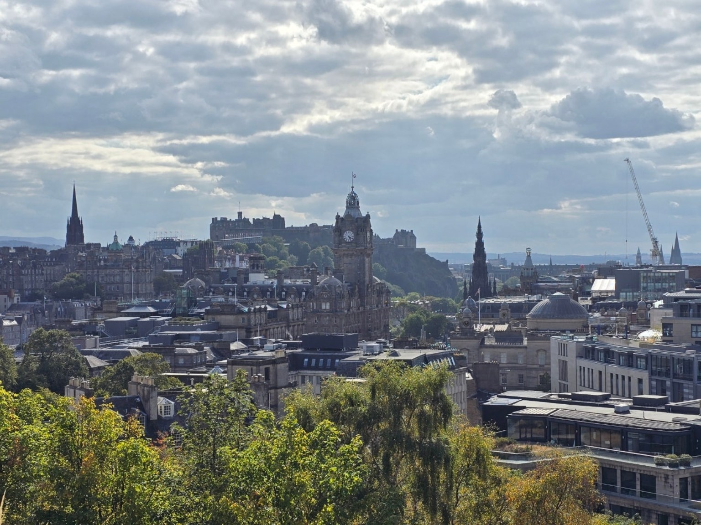

WALK THE CITY
에든버러를 걸어서 만나보세요
에든버러 중심의 주요 명소 대부분은 걸어서 자연스럽게 이어집니다.
에든버러 20년 거주
주요 명소를 잇는 효율적인 도보 코스
가능한 시간 · 걷는 속도 · 관심사에 맞춰 진행
역사와 문화, 사람과 이야기가 있는 여행
전망 좋은 곳과 사진 포인트 안내
TOUR ROUTE
에든버러 워킹투어 코스
기본 약 4시간 · 가능한 시간과 관심사에 맞춰 조정합니다.
가능한 시간 · 날씨 · 걷는 속도 · 관심사에 따라 코스와 방문 장소를 조정합니다. 투어 시작점도 숙소 위치와 일정 등 여행자의 상황에 맞춰 달라질 수 있습니다.
YOUR GUIDE
에든버러 20년, 직접 보고 듣고 경험한 도시
20년 동안 에든버러에서 공부하고 생활하며 직접 보고 듣고 경험해 온 도시를 안내합니다.
에든버러의 유서 깊은 건물과 오래된 거리를 걷는 것만으로도 좋지만, 그곳에 담긴 사람과 역사, 문학과 문화의 이야기를 함께 나누면 도시가 한층 더 생생하게 다가옵니다.
걷고, 보고, 이야기를 나누며 에든버러를 만나고 스코틀랜드를 자연스럽게 알아가는 여행을 함께합니다.
TOGETHER IN EDINBURGH
함께 걸은 에든버러
혼자 오신 분부터 가족과 친구, 여러 모임과 단체까지, 많은 분들과 에든버러의 길을 함께 걸어왔습니다.


사진은 공개 허락을 받은 실제 투어 사진을 중심으로 구성합니다.
SCOTLAND TRAVEL
스코틀랜드 여행정보
에든버러와 스코틀랜드를 여행할 때 필요한 정보를 주제별로 찾아보세요.
에든버러를 함께 걸어보세요
시간과 관심사에 맞춰 에든버러의 주요 명소와 그곳에 담긴 이야기를 함께 만나봅니다.
버튼을 누르면 사용 중인 이메일 앱에서 문의 메일을 작성할 수 있습니다.